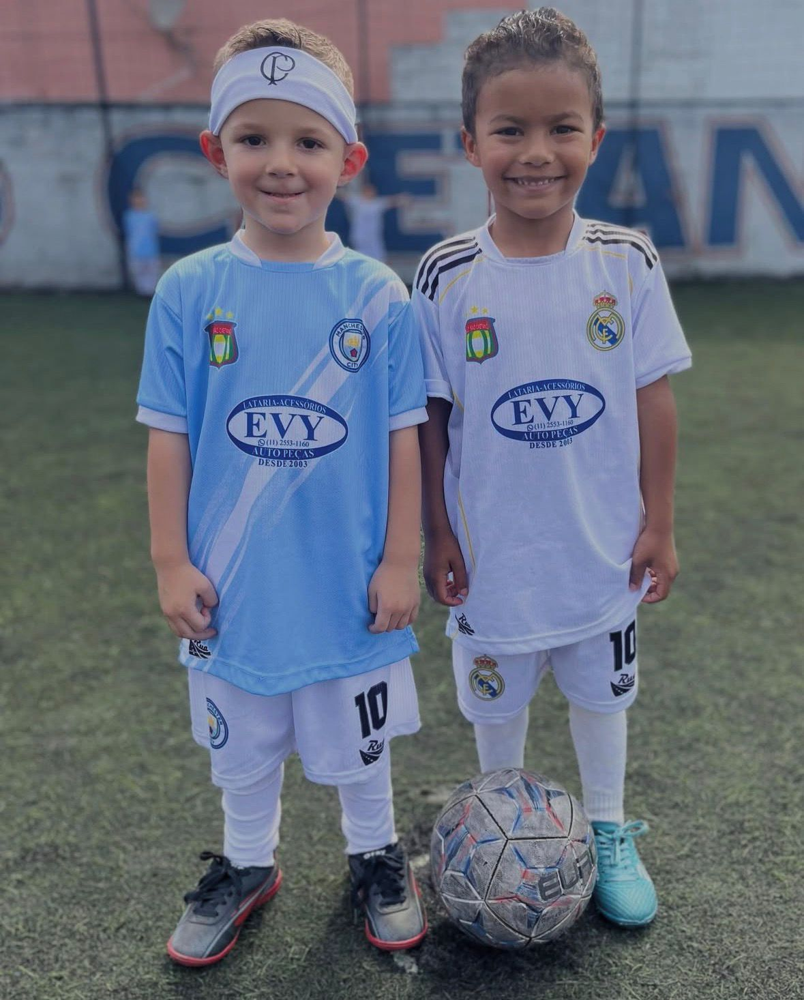
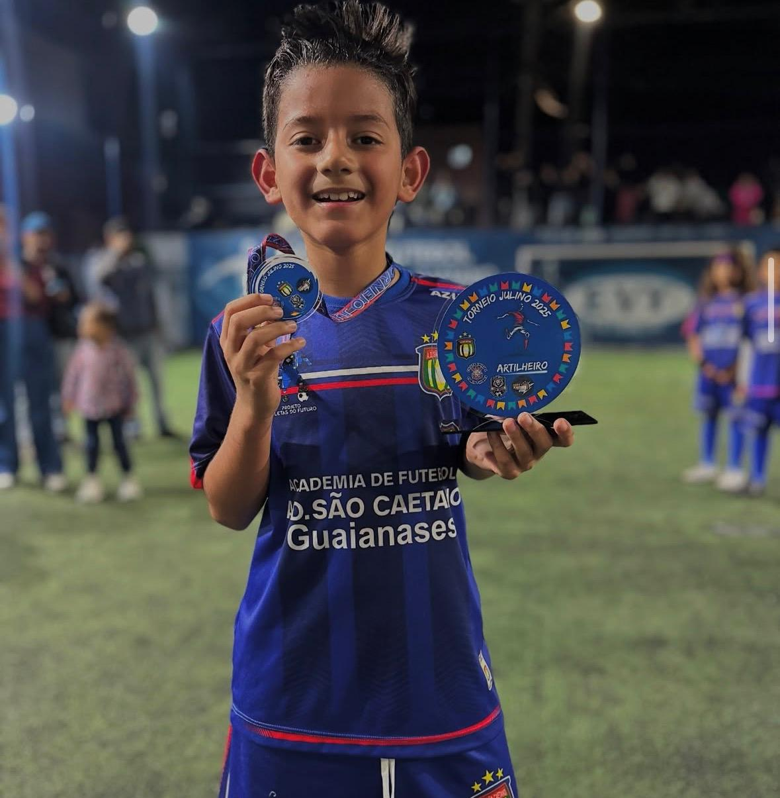
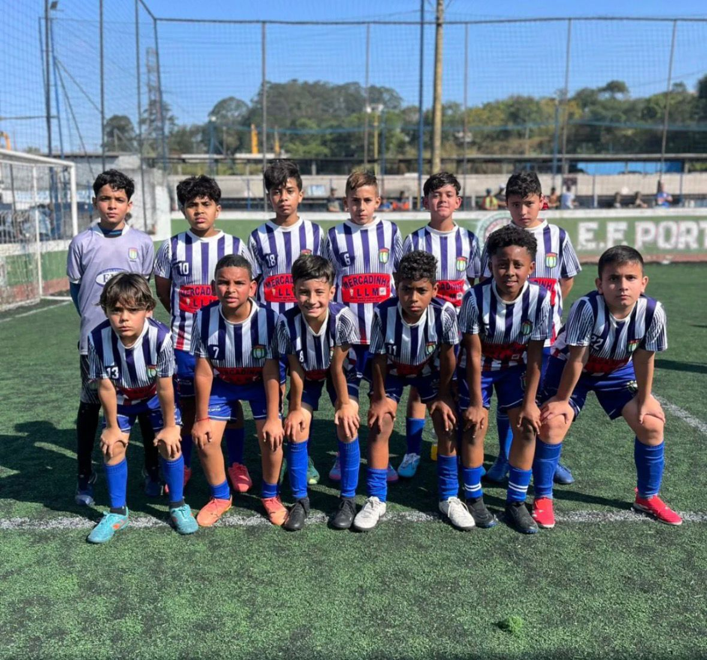
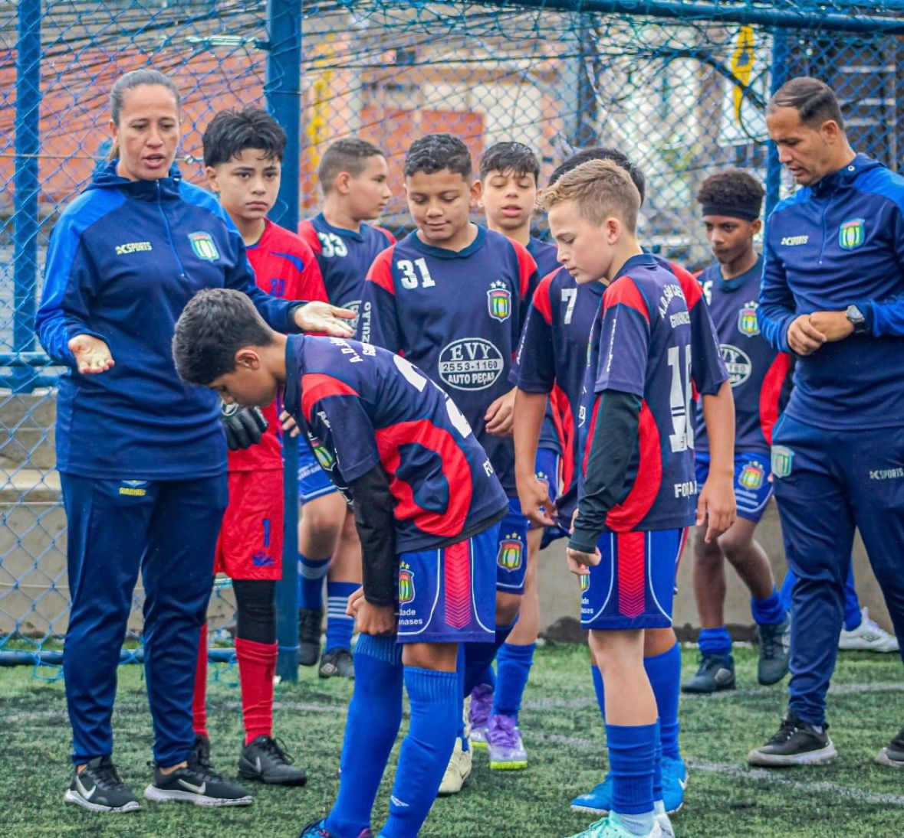
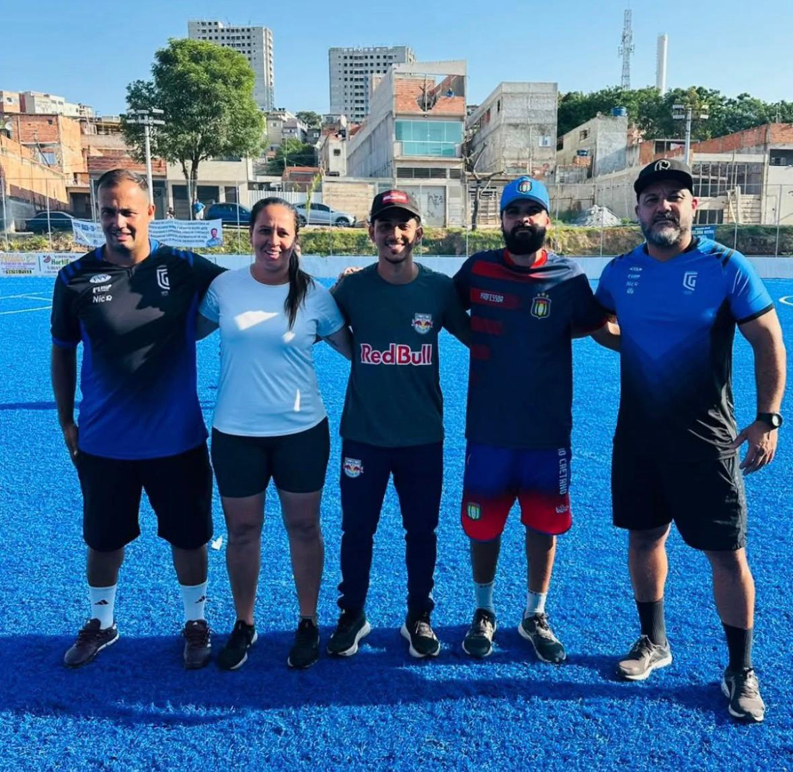
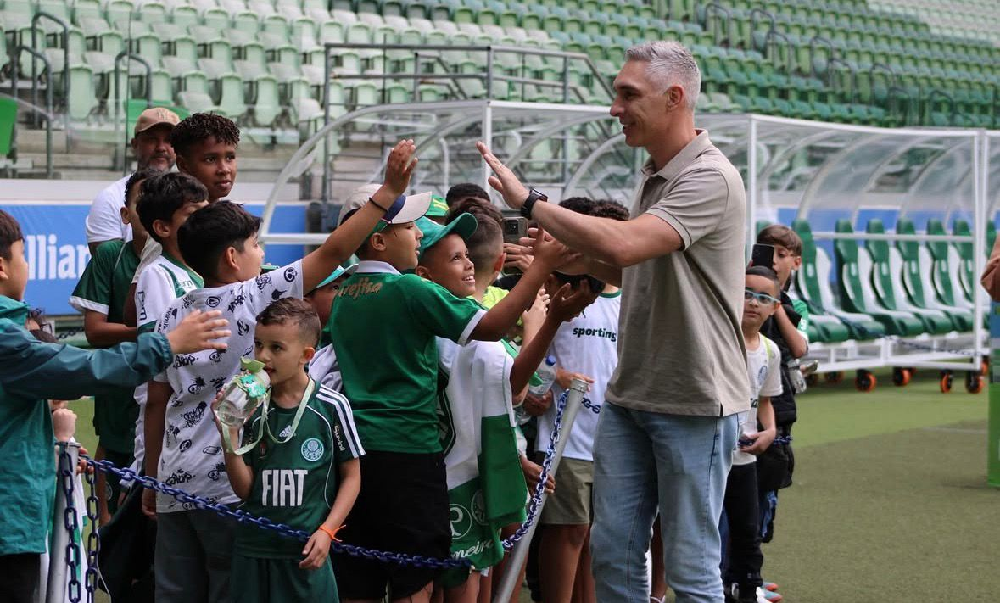
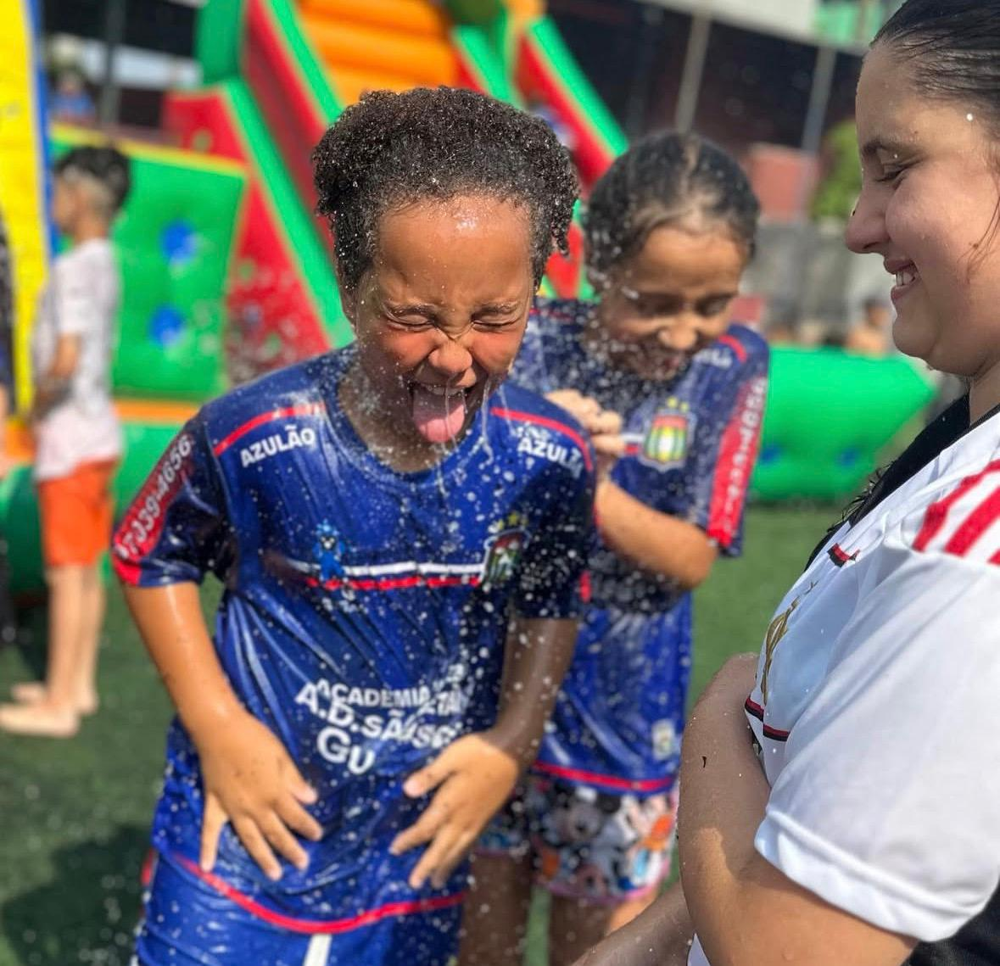
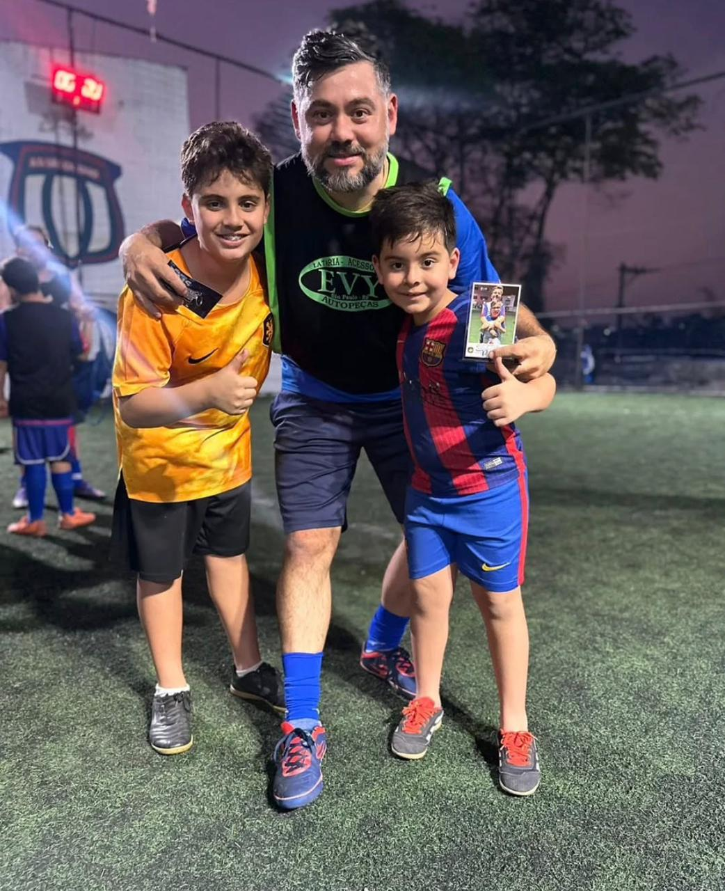
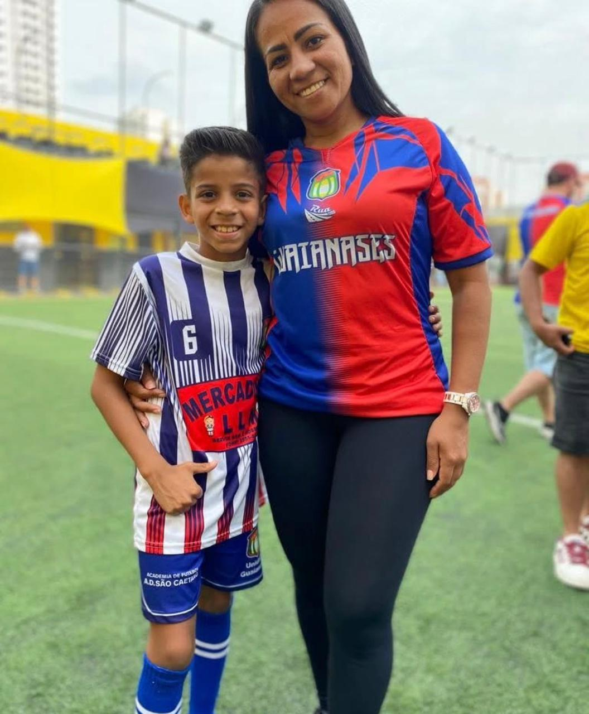
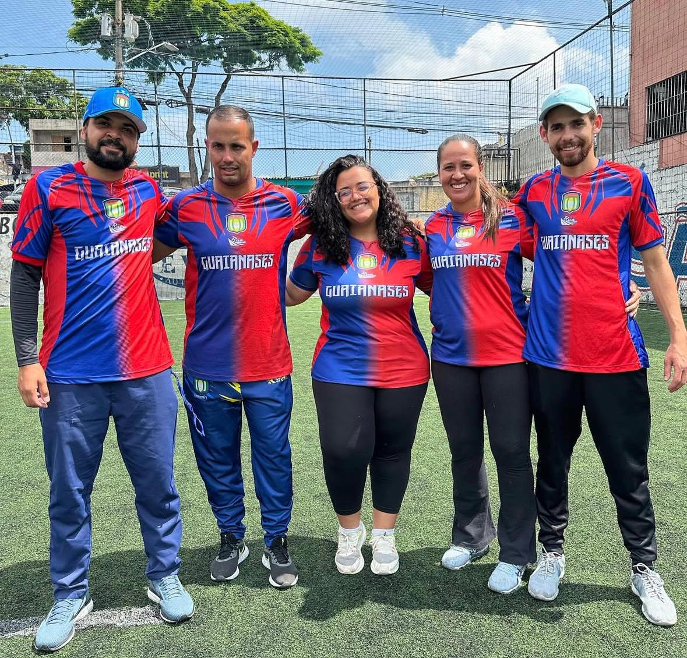

| Imagem |
Descrição |
|  |
Campeonato Interno
O Campeonato Interno permite que os alunos joguem entre si, desenvolvam novas habilidades, sintam o clima competitivo de forma saudável e vivenciem a emoção de participar de um torneio completo.
|
|  |
Campeonato da Festa Junina
Um campeonato temático e festivo que mistura esporte, cultura e alegria. As famílias participam e vibram junto com nossos atletas.
|
|  |
Campeonatos Fora de Casa
Participamos de diversos campeonatos regionais, oferecendo aos alunos novas experiências, desafios e crescimento esportivo.
|
|  |
Amistosos em Casa
Recebemos equipes convidadas para amistosos, proporcionando preparo técnico, troca de experiências e desenvolvimento de ritmo de jogo.
|
|  |
Peneiras e Observações de Talentos
Oportunidade para os alunos mostrarem seu potencial e serem avaliados por clubes e observadores, aproximando-se do sonho do futebol profissional.
|
|  |
Ida aos Estádios
Visitas a estádios profissionais para vivenciar a atmosfera do futebol, conhecer jogadores e se inspirar no esporte.
|
|  |
Dia das Crianças
Um dia especial com brincadeiras, atividades lúdicas e muita diversão, dedicado ao carinho pelos nossos pequenos atletas.
|
|  |
Dia dos Pais – Campeonato Especial
Um momento emocionante em homenagem aos pais que incentivam e acompanham o crescimento dos filhos no esporte.
|
|  |
Dia das Mães – Atividades e Homenagens
Jogos, atividades e momentos especiais dedicados às mães, celebrando seu amor e apoio.
|
|  |
Confraternização de Final de Ano
Evento especial para agradecer, celebrar conquistas, entregar medalhas e reunir as famílias em um momento marcante.
|